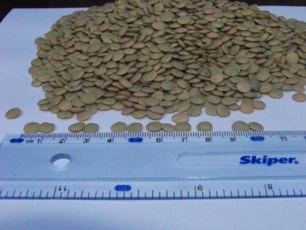
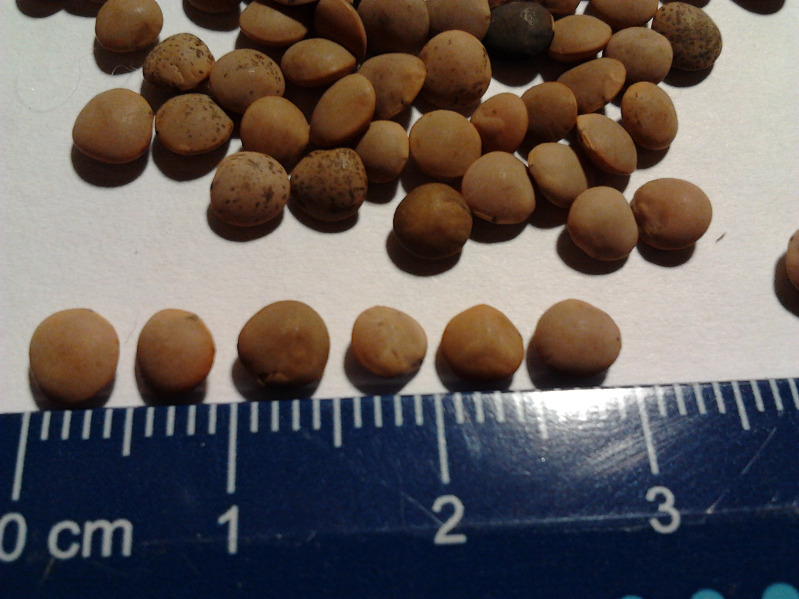
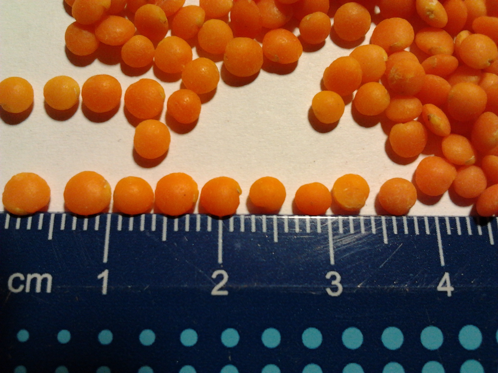

Насіння сочевиці
Сорт середньостиглий, вегетаційний період 65-75 днів. Різновидність нуммулярія. Рослини кущової, компактної форми, прямостоячі, заввишки 54-55 см. Насіння плоске, рожево-зелене, слабо-буріюче, однотонне. Маса 1000 насінин 58-70 г. Смакові якості відмінні. Вміст білка в насінні 27%. Боби плоскі, ромбовидні, завдовжки 17-18 мм і завширшки 9-10 мм., з однією або двома насінинами в бобі.
Урожайність 21,3 ц\га.
Рекомендується до посіву в Степу і Лісостепу України.
|
Ринковий тип: Сочевиця зелена крупнонасінна
Маса 1000 насінин: 65 г
Розмір насіння: 5,5-7 мм
Чистота: 99,5 %
Вологість: 11 %
Схожість: 95 %
|
 |
Сочевиця червона Даринка
Маса 1000 насінин 32г
Насіння округле в діаметрі 3-3,5 мм
Насіннєва оболонка коричнева з пігментацією
Урожайність середня 15 ц/га,
Стійкий до вилягання і посухи
Ефективність шелушіння (сім’ядолі розщеплені і не розщеплені, за виключенням насіннєвих оболонок, мучки, частинок ембріонів, уламків сім’ядолей) >90 %;
Ефективність відділення насіннєвих оболонок 99,9 %
Вихід не розщеплених сім’ядолей (футбол) 88 %
 |
 |
Маш
Заратустра
Створений для вирощування в помірних кліматичний умовах. Його можна вирощувати на більшій частині території України, від Херсона до Харкова. Він має порівняно короткий вегетаційний період 85-90 днів. За оптимальних строків сівби дозрівання настає в другій половині серпня. Рослини висотою 40-60 см. Боби довгі до 10 см, добре виповненні. Насіння зелене з атласним відтінком. Маса 1000 насінин 59 г. Середня урожайність за роки випробування 1300 кг/га. Максимальна 1900 кг/га.
Упакована в мішках по 25 і по 40 кілограм
Можлива доставка по Україні
Ціна договірна
|